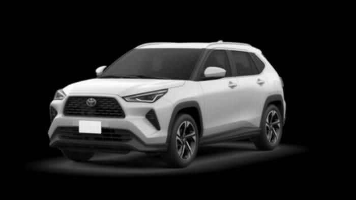

Toyota 4Runner
pagina principal
Toyota 4Runner

El Toyota 4Runner 2024 es uno de los vehículos más esperados de Toyota en América del Norte, ya que marcará el debut de la sexta generación de esta popular SUV. El modelo actual de quinta generación ha sido un éxito de ventas, pero ha estado en el mercado durante casi una década y necesita una actualización para mantenerse al día con la creciente competencia.
la sexta generación de la Toyota 4Runner llega con tecnología de vanguardia y un diseño renovado para mantenerse en la cima de la competencia SUV en América del Norte
Toyota ha prometido una serie de novedades para el 4Runner 2024, incluyendo mejoras en la tecnología y en la eficiencia de combustible. Se espera que el nuevo modelo incluya un motor más potente y eficiente que el modelo actual, con una mayor capacidad de remolque y un mejor rendimiento en la carretera y fuera de ella.
Ver también: Toyota Tacoma 2024: así podría verse según render
Además, se espera que la 4Runner 2024 tenga una cabina más espaciosa y lujosa, con una pantalla táctil de mayor tamaño para el sistema de infoentretenimiento y un sistema de sonido de alta calidad. También se espera que tenga más opciones de seguridad, como un sistema de frenado de emergencia y detección de peatones, y un control de crucero adaptativo.
Otras mejoras que se rumorean incluyen un sistema de tracción en las cuatro ruedas mejorado, una suspensión más sofisticada y una mayor capacidad de carga. También se espera que la 4Runner 2024 tenga un diseño actualizado, con líneas más modernas y un aspecto más agresivo.
En general, el Toyota 4Runner 2024 promete ser una SUV de próxima generación que satisfará las demandas de los conductores modernos que buscan un vehículo potente, eficiente y tecnológicamente avanzado. Los detalles completos del modelo se darán a conocer en su lanzamiento oficial, pero se espera que cumpla con las altas expectativas de los fanáticos de la marca Toyota y los entusiastas de los SUV en todo el mundo.
La anticipación por el lanzamiento de la Toyota 4Runner 2024 está en aumento, y nuestras expectativas son cada vez mayores gracias a las últimas actualizaciones en la línea de camionetas y SUV de Toyota. El rediseño de la sexta generación de la 4Runner ha generado mucho entusiasmo entre los fanáticos de la marca y los conductores de SUV en América del Norte.
Se espera que la fecha de lanzamiento de la Toyota 4Runner 2024 sea en el segundo semestre de 2023. Además, se rumorea que Toyota ofrecerá varios motores en la nueva 4Runner, incluyendo un muy esperado modelo híbrido. Estamos emocionados de ver cómo Toyota sigue innovando en su línea de SUV y camionetas para brindar a los conductores opciones más eficientes y avanzadas en tecnología.
El nuevo Toyota 4Runner 2024 será un poderoso híbrido
El actual Toyota 4Runner se basa en un motor V6 de 4.0 litros y aspiración natural, que genera 270 caballos de fuerza y 278 libras-pie de torque. Sin embargo, este motor, junto con su transmisión automática de 5 velocidades, ha quedado un poco desfasado y ha sido superado por la competencia en términos de eficiencia de combustible.
Con la próxima generación de la Toyota 4Runner 2024, esperamos que Toyota adopte su plataforma TNGA-F, presente en la Tundra 2023 y la Sequoia 2023, lo que permitirá un nuevo motor. Se especula que el nuevo motor podría ser el V6 de 3.5 litros con doble turbocompresor que se encuentra en el sistema de propulsión híbrido i-FORCE MAX de Toyota, que también se utiliza en el SUV Lexus RX 500h.
En la Tundra y la Sequoia, este sistema de propulsión híbrido tiene una potencia combinada del sistema de 437 caballos de fuerza y 583 libras-pie de torsión, y viene con una transmisión automática de 10 velocidades de serie. Con este nuevo motor y sistema de propulsión híbrido, la Toyota 4Runner 2024 podría superar a su competencia en términos de potencia y eficiencia de combustible.
La nueva Toyota 4Runner 2024 viene con impresionantes novedades que prometen mejorar significativamente su rendimiento y eficiencia de combustible. Una de las principales novedades es la posible incorporación de un tren motriz híbrido, que según se espera, superará al actual V6 de 4.0 litros en términos de rendimiento. Además, gracias a las mejoras en la plataforma modular de carrocería sobre bastidor, la 4Runner de sexta generación podría tener capacidades todoterreno mejoradas.
Además de esto, se espera que la 4Runner continúe ofreciendo su sistema 4WD de tiempo parcial, al igual que los equipos electrónicos adicionales como MTS y Crawl Control de Toyota.
También se espera que el acabado ‘TRD Pro’ de este SUV reciba actualizaciones en sincronía con el modelo de nueva generación en el que se basará. En resumen, la nueva Toyota 4Runner 2024 promete ser una SUV todoterreno aún más capaz y eficiente gracias a sus impresionantes novedades.
El interior de la 4Runner de sexta generación será una actualización masiva
La generación actual del Toyota 4Runner ha estado en el mercado por casi una década y ha pasado por varias actualizaciones en ese tiempo. Toyota se ha esforzado por equipar este SUV con características necesarias para competir en el mercado.
Sin embargo, a pesar de estar bien equipada, la cabina de la 4Runner muestra su edad en los materiales y la apariencia, y aunque el sistema de infoentretenimiento cuenta con las últimas opciones de conectividad, necesita una actualización. Para la próxima 4Runner, se espera que Toyota se inspire en los interiores de última generación del Sequoia y Tundra para actualizar su chasis, tren motriz e interior.
Basándonos en estas expectativas, es probable que la nueva versión del SUV de tamaño mediano de Toyota, la sexta generación de la 4Runner, presente mejoras en cuanto a los materiales utilizados en el tablero y los paneles de las puertas, con una mayor calidad y durabilidad. Además, se espera que en los grados más altos de equipamiento, la tapicería sea de mayor calidad y más lujosa.
Otra mejora esperada en esta nueva versión de la 4Runner es la inclusión de un sistema de infoentretenimiento más grande y moderno, posiblemente similar al que se encuentra en la Tundra, con una pantalla de 14 pulgadas y opciones avanzadas de conectividad inalámbrica como Android Auto y Apple CarPlay. Estas características proporcionarían una experiencia de conducción más conectada y cómoda para los usuarios de la 4Runner.
El grado TRD Pro actual de la 4Runner está equipado con cámaras de vista envolvente que hacen más fácil la navegación en senderos todoterreno. Sin embargo, debido a su baja resolución, la transmisión de la imagen a través de la pantalla de información y entretenimiento en la cabina no es la óptima. Se espera que el nuevo modelo mejore en este aspecto para ofrecer una mejor experiencia al conductor y pasajeros.
La 4Runner 2024 rediseñada será una SUV todoterreno épica
Aunque Toyota no ha publicado oficialmente la fecha de lanzamiento de la próxima generación de la 4Runner, se espera que esta ocurra después de la presentación del Toyota Tacoma 2024.
La marca ha estado actualizando constantemente sus otros modelos de camionetas y SUV, como el Toyota Land Cruiser, Tundra y Sequoia, y los ha migrado a la nueva plataforma TNGA-F. Con el objetivo de mejorar la eficiencia del combustible, el rendimiento y la sostenibilidad en toda su línea de vehículos, Toyota tendrá que innovar con la 4Runner para no quedarse atrás.
Fecha de lanzamiento del Toyota 4Runner rediseñado
Recientemente, Toyota ha hecho una burla de una imagen de silueta que podría ser de su próxima camioneta Tacoma 2024. Es posible que la nueva versión de 4Runner siga pronto. Si se mantiene la tendencia actual de burlas, es probable que veamos el rediseño de 4Runner lanzado en el tercer trimestre de 2024.
El año pasado, pudimos echar un vistazo al próximo Toyota 4Runner gracias a un renderizado exclusivo de HotCars que nos muestra cómo podría ser el modelo cuando se presente al mundo. Podemos apostar a que se parecerá mucho al SUV que hemos ilustrado aquí. Esto significa que será un Toyota resistente que querrás empezar a ahorrar para conseguir.
Tipo De Colores Disponible.